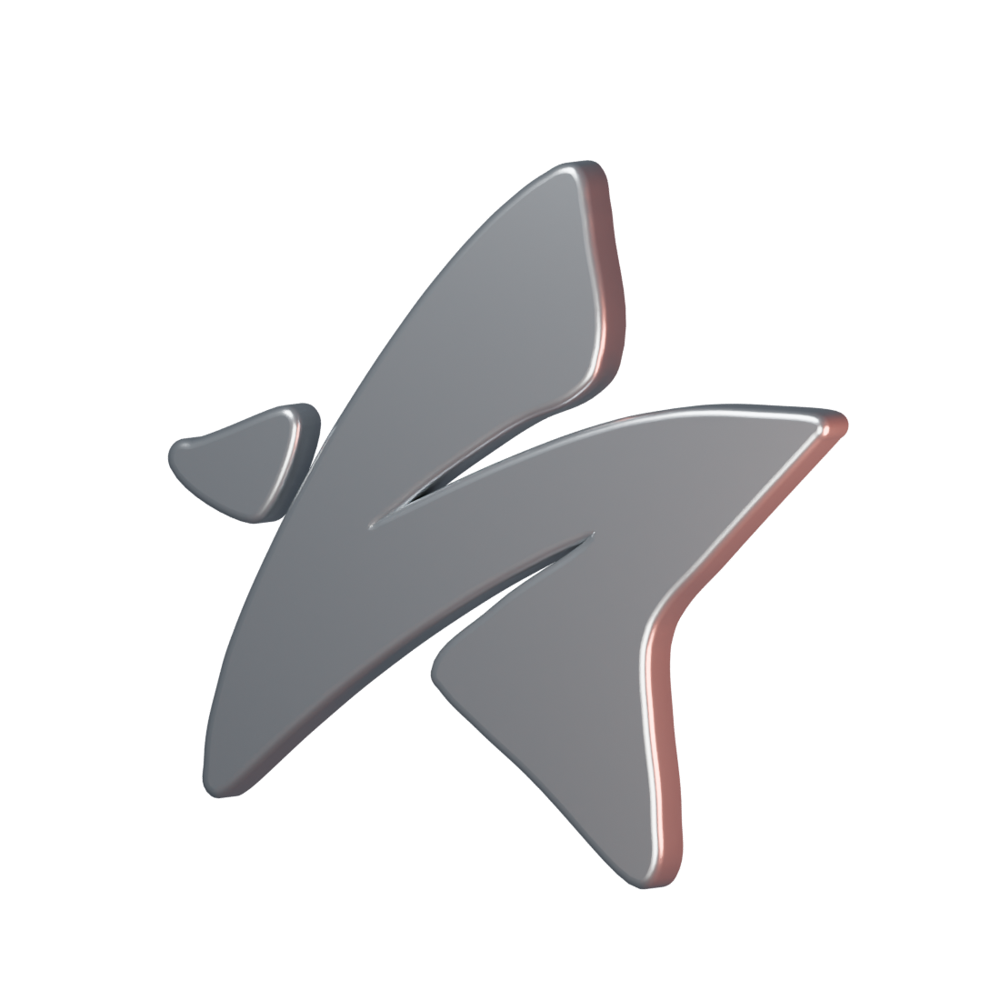
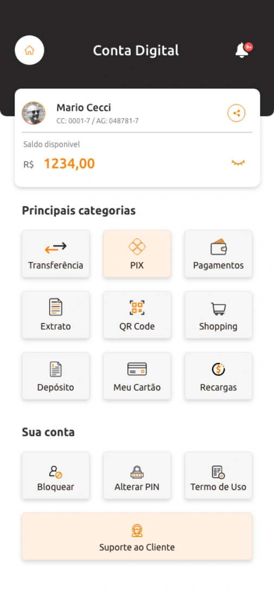
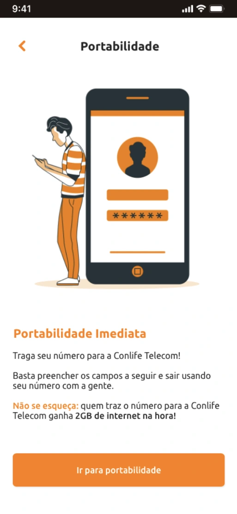
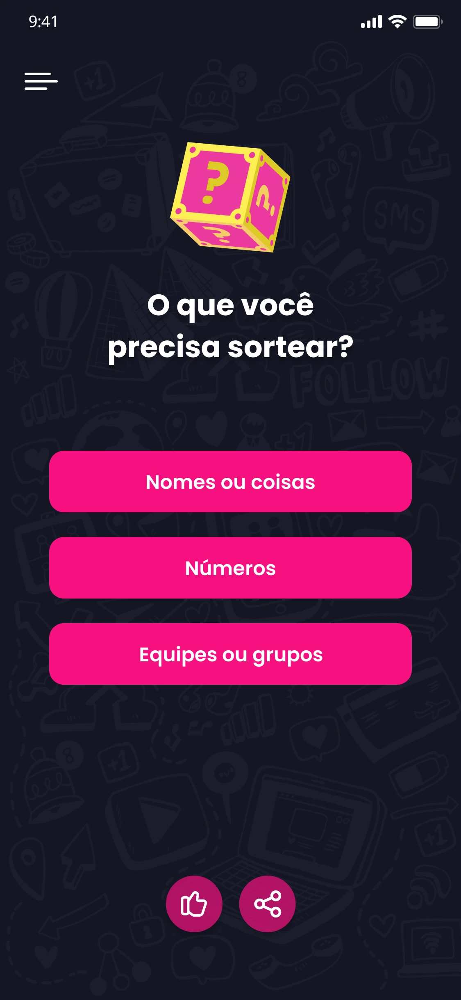
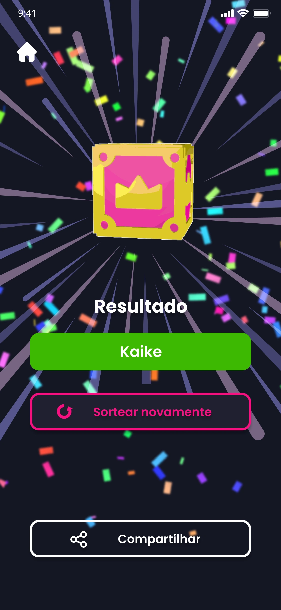
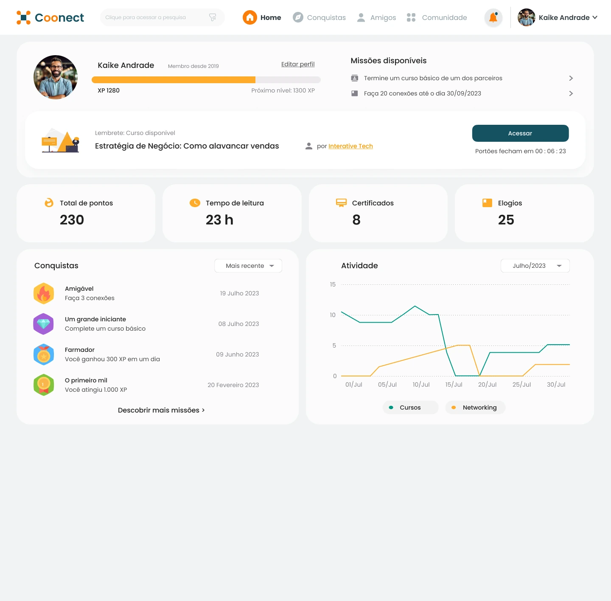
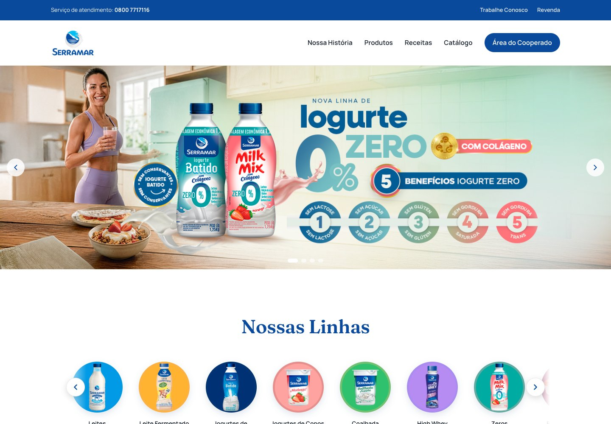
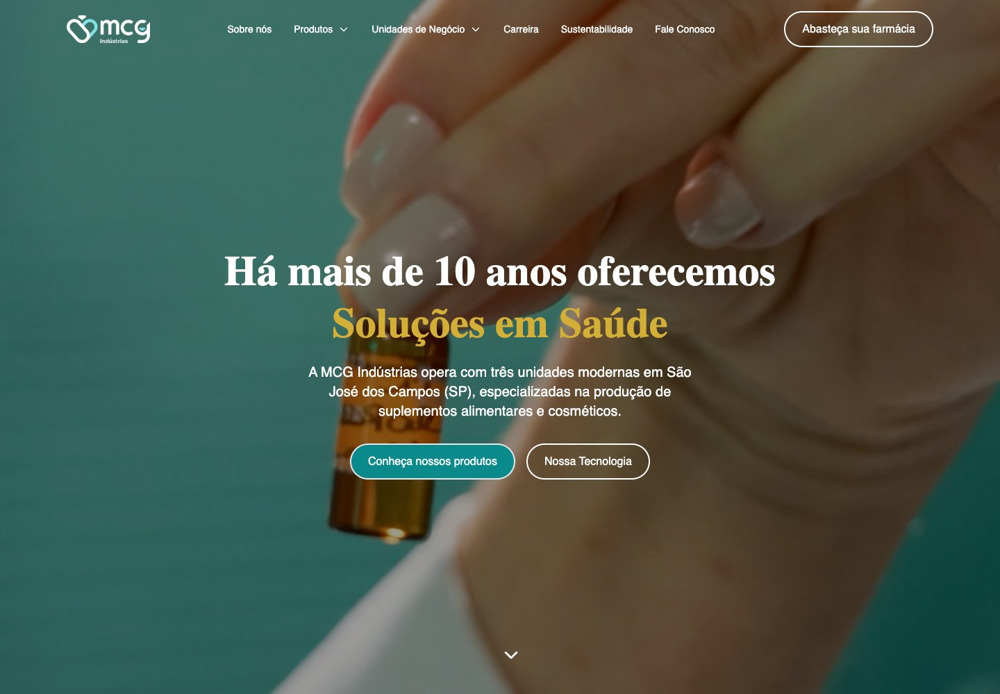

Você tem uma ideia.
Estruturamos o produto, desenhamos a experiência e definimos com você o que precisa ser construído. O desenvolvimento pode fazer parte do escopo.
Design e tecnologia para empresas que precisam lançar um produto, evoluir uma plataforma ou dar uma nova presença à marca.
Explore o que criamos
Da marca ao produto.
Da complexidade à clareza.
Design que aproxima pessoas e tecnologia.
Estratégia de produto, identidade e desenvolvimento.
Desde 2020, com participação direta de quem cria.
Conheça os desafios, as decisões
e o trabalho por trás de cada entrega.
Serviços financeiros mais acessíveis para pessoas com diferentes níveis de familiaridade com tecnologia.


Da organização dos participantes à revelação do resultado, com 3D e movimento integrados à experiência.
Conheça o case

Clareza para a rotina de quem cuida. Agenda, pacientes e visão da operação.
Explore o case Plataforma de gestão
Da descoberta à participação em uma rede de profissionais e comunidades.
Explore o case Rede profissional
Progresso, conquistas e reconhecimento em uma experiência de exercícios cognitivos.
Explore o case Gamificação

Uma cooperativa com história.
Uma presença digital à altura.

Complexidade industrial.
Navegação clara.

Tem mais coisa acontecendo por aqui. A gente mostra na conversa
Cada projeto pede uma combinação.
A gente encontra a sua.
Uma identidade que tem algo a dizer. Uma interface que faz sentido usar. A gente desenha o que sua marca precisa para ser reconhecida e entendida.
Do site ao sistema que sustenta a operação. Design e código pensados juntos, com atenção a cada tela, integração e caminho de quem usa.
Ideias para jogar, explorar e descobrir. Do conceito ao protótipo, construímos experiências digitais e analógicas com mecânicas que merecem mais uma partida.
Estruturamos o produto, desenhamos a experiência e definimos com você o que precisa ser construído. O desenvolvimento pode fazer parte do escopo.
Revisamos jornadas, navegação e linguagem visual para identificar atritos e dar direção à próxima versão.
Entramos com pesquisa, UX, UI e prototipação. Sua equipe recebe o design e as orientações para implementar as decisões.
Identidade, interface e tecnologia precisam funcionar juntas.
A Solucci conecta essas decisões para que a personalidade da marca apareça no produto e a experiência faça sentido para quem usa. O acabamento visual e a clareza de uso recebem o mesmo cuidado.
Conheça o trabalho no ConlifeUm processo com direção compartilhada, espaço para ajustes e aprovação antes de avançar. As etapas se adaptam ao que o projeto precisa.
Nos reunimos com você para entender o negócio, as pessoas e o problema. Pesquisa e referências ajudam a definir o que o projeto precisa resolver e quais caminhos vale explorar.
Alinhamos com você a direção do projeto.
Organizamos jornadas, fluxos e estrutura. Wireframes e estudos visuais tornam as ideias concretas para discutir prioridades antes de avançar nos detalhes.
Você vê a estrutura e as escolhas de design.
Você percorre o protótipo e conversa com a gente sobre os ajustes. Refinamos a interface, a navegação e os detalhes até alinharmos a versão que seguirá para desenvolvimento.
O protótipo é aprovado com você antes da próxima etapa.
Com o protótipo aprovado, seguimos para implementação e conferência quando o desenvolvimento faz parte do escopo. Quando outra equipe assume essa etapa, preparamos o design e as orientações para o handoff. Os materiais de entrega acompanham o que foi contratado.
O trabalho segue com clareza para quem vai usar ou construir.
Já tem uma ideia ou um projeto que precisa evoluir?
Vamos conversar sobre o seu projetoExplore os relatos.
Uma conversa de cada vez.
Chegamos com várias ideias e pouca clareza sobre o que vinha primeiro. A Solucci organizou as prioridades e transformou a conversa em um protótipo que conseguimos avaliar de verdade.
Os ajustes não ficaram só na aparência. Cada conversa ajudou a deixar as telas mais claras e a experiência mais próxima do que imaginávamos.
Já tínhamos uma equipe de desenvolvimento. Receber o design com os fluxos e as decisões explicadas deu uma referência concreta para a implementação.
Relato 01 / 03
Textos fictícios para demonstrar a experiência. Serão substituídos pelos depoimentos reais.
Os entregáveis dependem do escopo contratado. No design de produto, podem incluir fluxos, interfaces, protótipo e orientações para implementação. Quando o desenvolvimento está no escopo, a entrega inclui a implementação e sua conferência.
Sim. A Solucci pode cuidar da pesquisa, da experiência e do design, preparando os materiais e as orientações para sua equipe implementar. Essa divisão é alinhada no escopo do projeto.
Você participa do alinhamento da direção e avalia a estrutura e o protótipo. Os ajustes são discutidos com a Solucci antes da aprovação da versão que segue para desenvolvimento ou entrega à equipe responsável.
Traga essa necessidade para a conversa inicial. Evolução, manutenção e suporte precisam ter seu alcance definido na proposta; não são uma extensão automática de qualquer projeto.
Conte o que sua empresa faz e o que você quer criar ou melhorar. Se já tiver um site, referências ou uma data em mente, vale compartilhar também.
Na primeira conversa, a Solucci entende o contexto, esclarece as dúvidas e alinha com você o próximo passo.